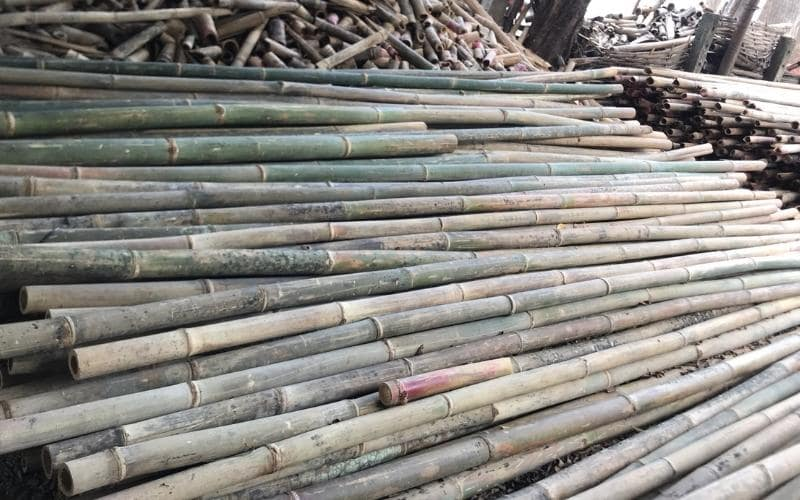
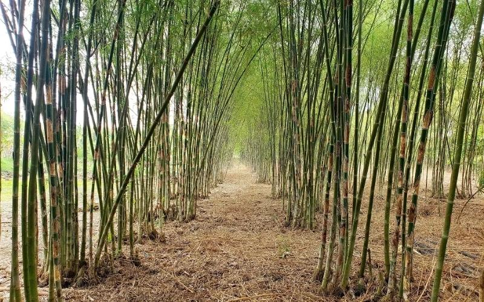
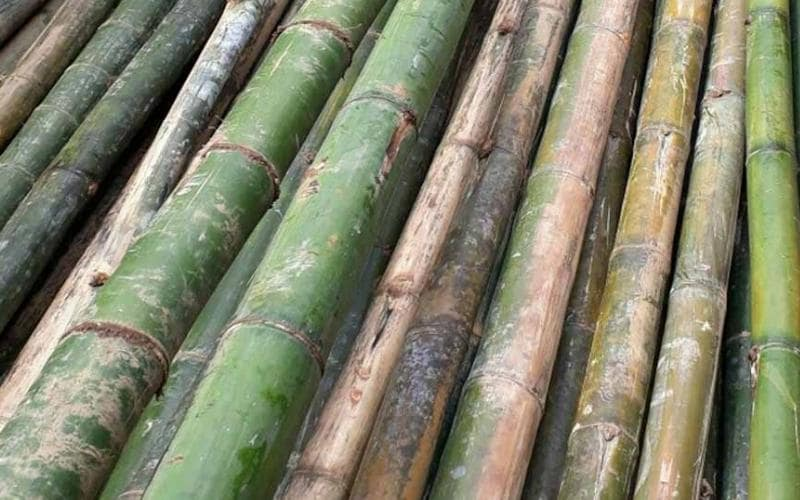

Cây tre lồ ô là loại cây tre rất quen thuộc với người dân Việt Nam. Bởi đây là loại nguyên liệu thân thiện với môi trường, mang lại nhiều công dụng ưu việt và giá trị kinh tế cao cho người nông dân. Cùng tìm hiểu chi tiết nhé.
Cây tre lồ ô là cây gì?
Cây lồ ô có nguồn gốc từ Ấn Độ, thuộc họ trúc có tên khoa học là Bambusa balcoa. Ngày nay ở nước ta đây là loại nguyên liệu rất quen thuộc và thân thiện với môi trường không chỉ trong đời sống hàng ngày mà còn trong công nghiệp và xây dựng. Cây tre lồ ô rất linh hoạt và được mọi người sử dụng cho nhiều mục đích khác nhau.
Cây lồ ô chủ yếu mọc thành khóm, sinh trưởng nhanh, quanh năm sinh trưởng tốt trong rừng tự nhiên. Khi trưởng thành cây có chiều cao từ 14m đến 18m. Đặc biệt, có những cây có thể cao tới 25m. Nó có tốc độ tăng trưởng cao, ít phải bảo trì và có giá trị kinh tế cao. Tre mang lại cho nông dân nguồn thu nhập lớn và ổn định.
Giá bán cây tre lồ ô tại TPHCM
Cây tre lồ ô có thân cây lớn hơn. Ruột của cây ô lớn cũng rỗng và có kết cấu mềm hơn tre. Khi thu hoạch tre mua bán có đường kính khoảng 5-15 cm. Cây có thể dài tới 18m. Hiện tại giá bán cây dù khổng lồ tại tphcm như sau:
- Cây tre lồ ô dài 4 m, đường kính 6-7cm chưa qua xử lý giá giao động khoảng: 40.000đ/cây.
- Cây có chiều dài 4 m và đường kính 6-7cm đã được xử lý giá khoảng từ 60.000đ/cây.
Phân bố
Tre chủ yếu được tìm thấy trong các khu rừng của khu vực miền trung và miền nam. Được trồng nhiều ở các vùng núi của tỉnh Quảng Ngãi như Chà Bốn, Thái Chà, Sơn Tây, Thừa Thiên-Huế, Quảng Nam, Đà Nẵng…
Đặc điểm hình thái cây lồ ô
Thân lồ ô
Thân cây không thẳng mà hơi cong. Bề mặt thân rất nhẵn, có nhiều đốt, bên ngoài phủ một lớp lông chủ yếu màu nâu hoặc xám bạc. Đường kính của thân cây khoảng 15 cm, có thể nhìn thấy rõ các cạnh của thân cây.
Chiều dài trung bình mỗi lóng từ 40cm đến 60cm. Các lóng gốc dài từ 30 đến 50 cm. Độ dày thành của thân cây là 1,1 cm. Thân cây thường có màu xanh bạc khi còn non nhưng chuyển sang màu xanh khi trưởng thành.

Cành
Cành cây tre lồ ô phát triển từ các lóng. Mỗi lóng chồi có thể xuất hiện trên nhiều nhánh. Chiều dài của cành từ 2m đến 3m.
Lá
Lá rất giống lá trúc. Phiến lá dài khoảng 20-30 cm, rộng 2-4 cm. Đầu lá thường hướng về phía đuôi, thuôn nhọn dần. Mặt lá có gân chính ở giữa và các gân phụ chạy song song với nhau.
Mo
Bẹ của cây cây lồ ô có dạng hình thang. Chiều rộng của đáy từ 20cm đến 30cm. Đầu rộng từ 5 đến 8 cm và hơi lõm. Mỗi bẹ cao từ 20cm đến 30cm. Bề mặt của vỏ được bao phủ bởi những sợi lông màu nâu và bề mặt bên trong nhẵn.
Lá chủ yếu hình mác, dài 15-20 cm và rộng 3-4 cm, có sọc ở cả hai mặt. Các răng hàm thường kém phát triển, có bề ngoài cứng và nhiều lông, đặc trưng bởi các khe sâu.
Hoa cây lồ ô
Hoa lồ ô chỉ nở khi già. Chúng thường mọc thành cụm với nhiều nhánh. Trên mỗi cành thường có 3-5 hoa nhỏ nhọn, hơi dẹt và nhọn ở đỉnh. Hoa lồ ô có màu vàng lục hoặc tím.
Kích thước của hoa có chiều dài khoảng 1cm đến 2 cm và chiều rộng từ 5mm đến 8mm. Hoa lưỡng tính thường mọc tập trung và có nhụy riêng biệt, thường có hai vòi. Hoa ở gốc và ngọn cây thường kém phát triển.
Công dụng cây tre lồ ô
Cây tre lồ ô có tính ứng dụng rất cao. Chúng được ứng dụng trong lĩnh vực như là:
- Trong đời sống hàng ngày: Tre được dùng để làm cán cuốc, cán xẻng, cán dao, thúng, sọt, gánh nhẹ… và các nông cụ.
- Ẩm thực: Măng non được dùng để chế biến món măng trong các món ăn ngon như canh măng, măng chua, măng khô…
- trong các gia đình, nhà hàng, quán ăn… rất độc đáo mà giá thành cũng không hề rẻ.
- Lĩnh vực xây dựng: được dùng để làm hàng rào, tường bao, vách ngăn, nhà sàn, nhà hàng, quán bar,… đều rất độc đáo mà giá thành cũng rẻ.
- Phòng chống lũ lụt và thiên tai: Tre được trồng trong rừng để chống xói mòn đất, bảo vệ rừng tự nhiên, chống xói mòn đất và bảo vệ môi trường sống của con người.
Xem thêm: Cây le rừng
Kỹ thuật trồng và khai thác cây lồ ô

Hiện chúng tôi chưa nghiên cứu hay hướng dẫn kỹ thuật trồng cây lồ ô bài bản. Cũng như sinh trưởng và sinh sản như các loài tre khác. Cây lô ô thường được sử dụng từ gốc và được trồng ở các khu rừng trung tâm, vùng núi và vùng yên ngựa.
Độ tuổi lý tưởng để sử dụng cây ô rô là khoảng 3 tuổi. Lúc này chủng đã đạt độ cứng tiêu chuẩn đáp ứng nhu cầu của con người. Sau 5 năm trồng, thân cây trở nên già cỗi, giòn và kém chất lượng. Lãng phí diện tích mà không đảm bảo giá trị xuất khẩu. Trên đây là thông tin chia sẻ về cây trúc khổng lồ. Quý khách có nhu cầu mua gỗ trúc vui lòng liên hệ với Cừ Tràm Thái Dương để được tư vấn và nhận được sản phẩm chất lượng nhất, số lượng không giới hạn.
Những ưu điểm của cây tre lồ ô
Cây được sử dụng rộng rãi trong các ngành công nghiệp khác nhau. Bởi cây tre lồ ô có những ưu điểm như sau:
- Thân cây nhẹ và dẻo hơn tre.
- Chiều cao nhô ra có thể được sử dụng làm hàng rào, tường và sàn nhà.
- Chất liệu thân tre rất tốt cho sức khỏe người sử dụng.
- Đồng thời, bạn có thể tạo ra một không gian sống mới, hẹp và bình dị. Cây mang đến những gam màu đậm thể hiện văn hóa dân tộc và truyền thống của người Việt Nam.
- Tre có đường kính lớn, không thấm nước và có khả năng chống chịu cao trước các tác động của môi trường. Vì vậy, độ bền của các công trình, dụng cụ bằng loại gỗ này có thể kéo dài hàng chục năm. Nó ít khi bị cong vênh, mối mọt hay ẩm mốc.
Đơn vị cung cấp cây lồ ô uy tín TPHCM?

Tại khu vực TP.HCM nếu có nhu cầu mua bán tre lồ ô, hãy đến Kỹ Thuật Việt Nam. Chúng tôi chuyên cung cấp cây lồ ô và các nguyên liệu tre với giá thành hợp lý.
Chúng tôi chiết khấu cao cho những đơn hàng lơn. Chúng tôi thực hiện nhiều công trình ốp tre trúc, quý khách có nhu cầu hãy liên hệ ngay để được tư vấn chi tiết.
Với nhiều năm trong lĩnh vực và thi công trình ốp tre trúc..chúng tôi tin chắc chắn sẽ làm bạn hài lòng. Quý khách có nhu cầu tham khảo thêm hãy liên hệ ngay hotline: 093.123.5757 để được tư vấn báo giá chi tiết nhé.
CÔNG TY TRÁCH NHIỆM HỮU HẠN TRE VIỆT
BUILDING
Địa chỉ: 917 Phạm Văn Đồng, Phường Linh Xuân, Thành phố
Hồ Chí Minh
Nhà máy sản xuất: Phú Hợp B, Xã Phú Lâm, Đồng Nai.
Điện thoại – Zalo: 093.123.5757
Email: info@treviet.com.vn – treviet23@gmail.com